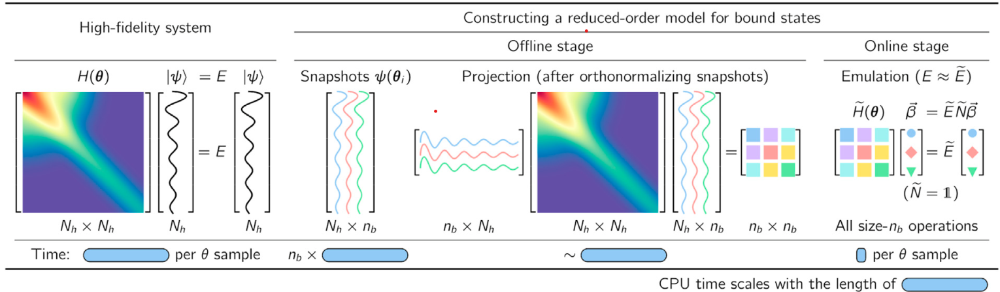

welcome to my webpage, you can contact me through email.
Contact
Qingyang Luo
Nuclear Theory and Nuclear Astrophysics Group,Sun Yat-sen University
luoqy28@mail2.sysu.edu.cn
1145141919810
中国广东省珠海市香洲区唐家湾大学路2号中山大学
Research
Research interests
1.\(\rm EC_{kmax}+GCM\)
We present a benchmark study of the generator coordinate method (GCM) combined with eigenvector
where the interaction strength is treated as a controlling parameter, simulating quantum many-body systems with
the phase transition from noncollective to collective states. We demonstrate that the ECkmax scheme accurately
reproduces the low-lying states of the LMG model. In this scheme, the EC basis consists of the wave functions
of low-lying states up to the kmax-th state of sampling Hamiltonians. Compared to \(\rm EC_1\), which only includes the
wave functions of the kth state of sampling Hamiltonians for the kth state of a target Hamiltonian, the ECkmax
scheme exhibits significantly improved efficiency and accuracy. This study suggests the potential utilization of
the extended EC scheme as an efficient emulator for GCM calculations.
continuation (EC) in two different schemes for the low-lying states of the Lipkin-Meshkov-Glick (LMG) model,

Fig1. The basic idea how EC works. It optimize the calculation process by using the training vectors(snapshots) obtained by solving the complicated many body Hamiltonians to expand the target Hamiltonian.
In this way, the time complexities will be reduced from \(O\big(N_h^2\big)\) to \(O\big(n_b^2)\), in which \(n_b\) represents the number of training set.
2. Schiff moment
to be continue
Publications
1. Emulating the generator coordinate method with extended eigenvector
continuation for the Lipkin-Meshkov-Glick model, Q. Y. Luo, X. Zhang, L. H. Chen, and J. M. Yao, PHYSICAL REVIEW C 110, 014309 (2024)
Education background
2020.09 - 2024.06:
Bachelor's degree, Sun Yat-sen University